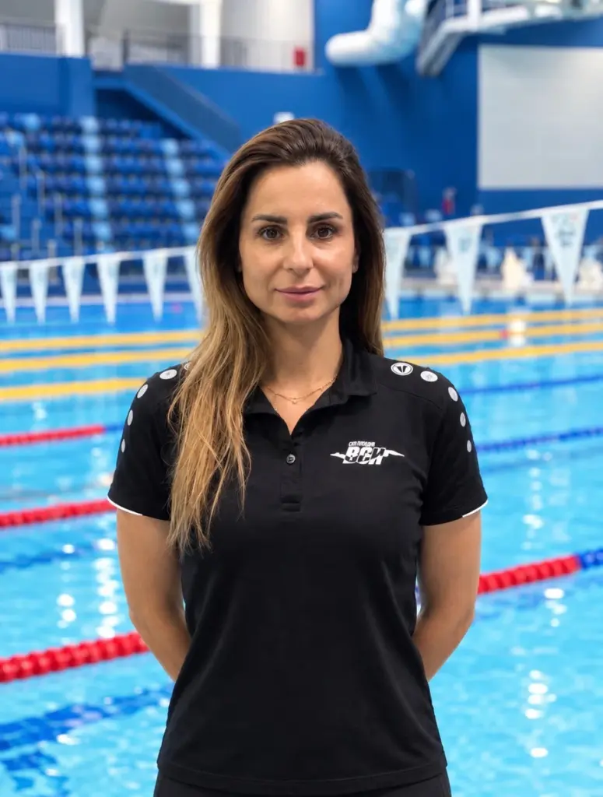
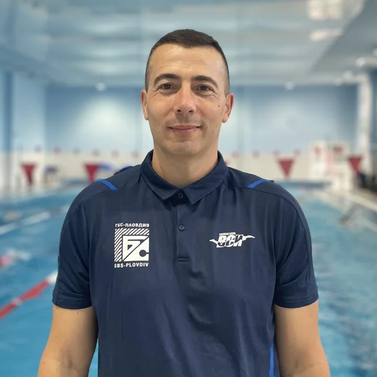
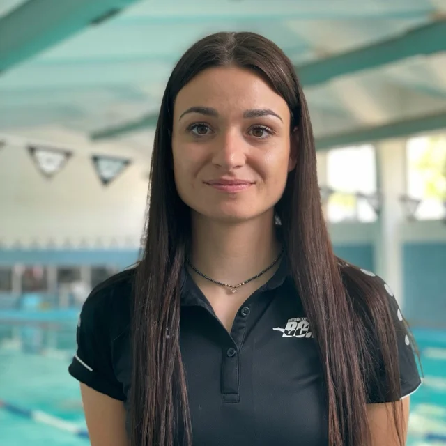
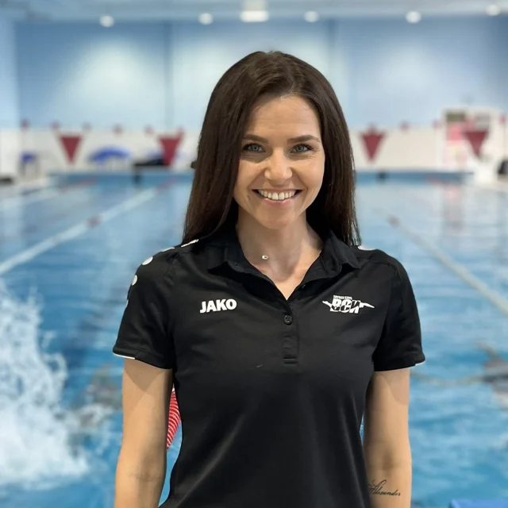
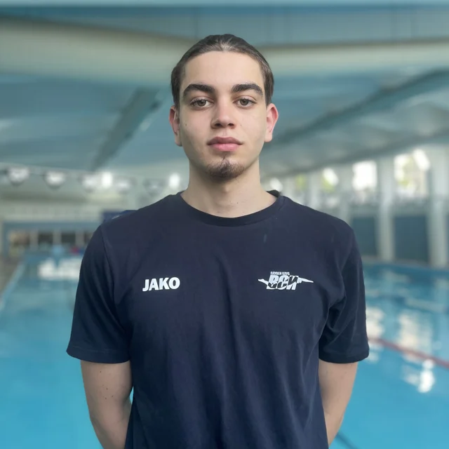
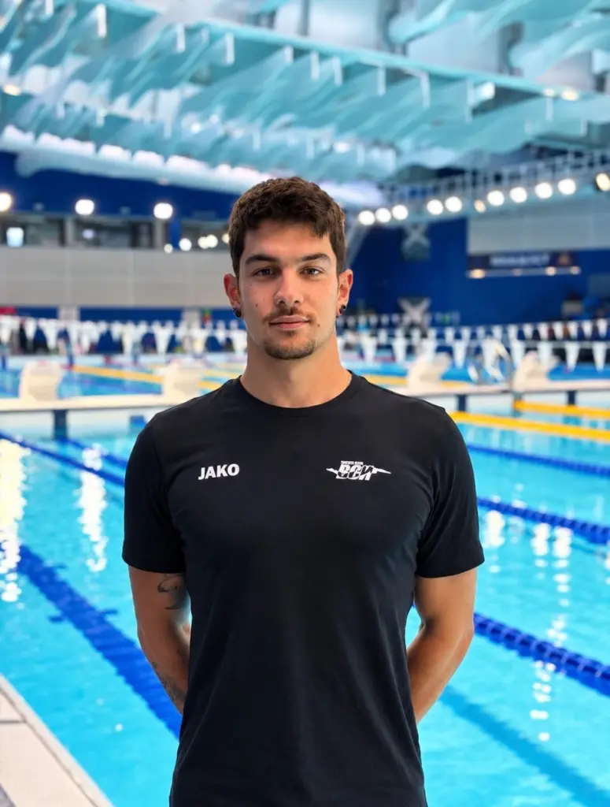
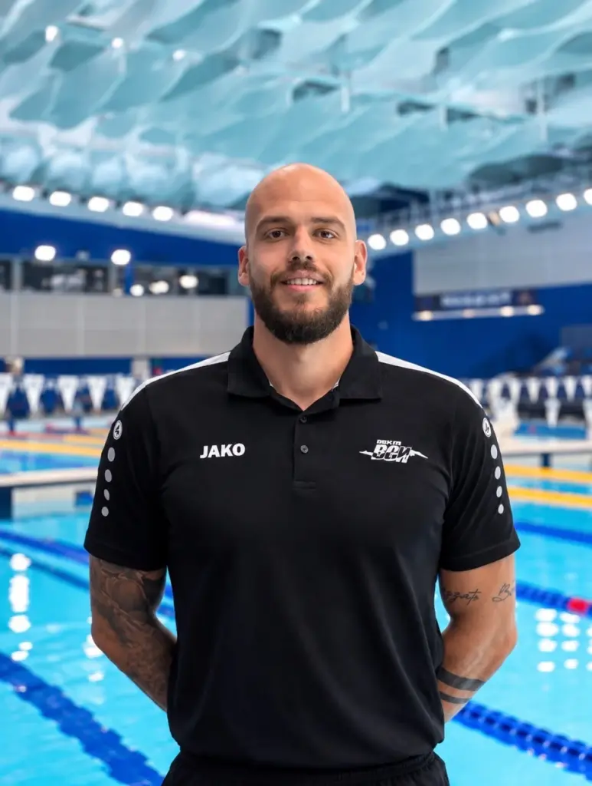
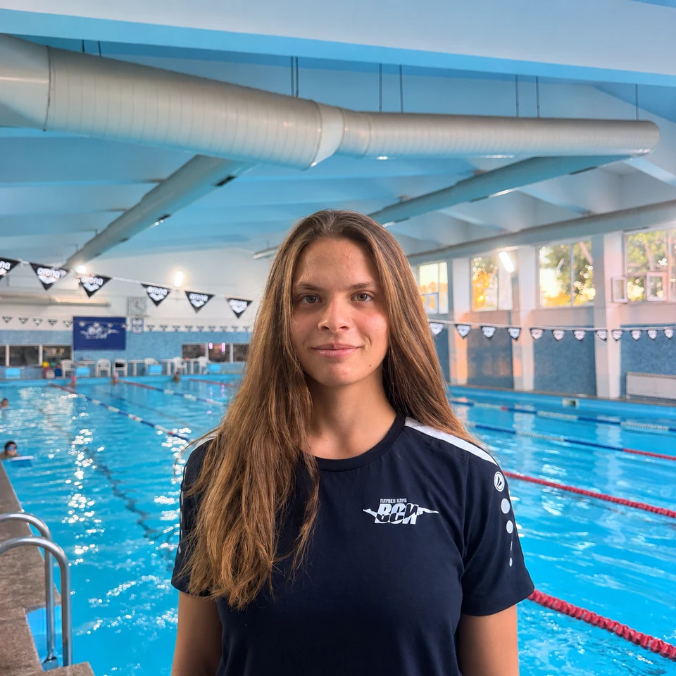
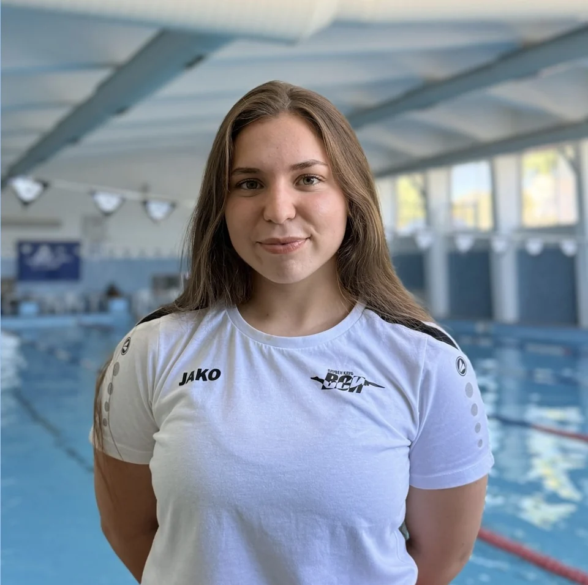
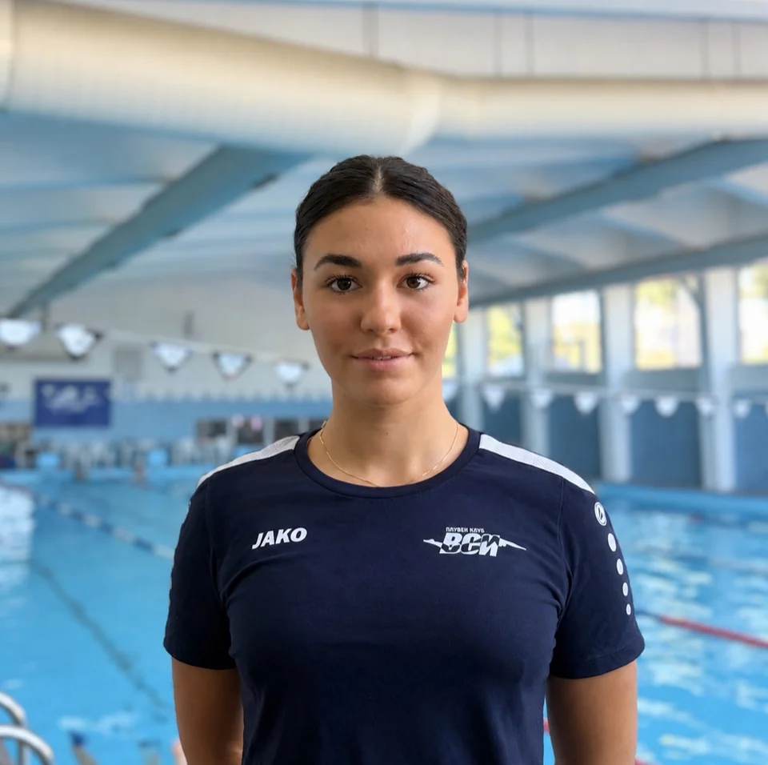

Старши треньорМила Мелева
Старши треньор на състезателите на ВСИ. Многократна държавна шампионка и магистър по „Спорт за високи постижения“ от НСА.
Вижте профила ↗Запознайте се с треньорския екип на ВСИ — от първите уроци до състезателното плуване.

Старши треньорСтарши треньор на състезателите на ВСИ. Многократна държавна шампионка и магистър по „Спорт за високи постижения“ от НСА.
Вижте профила ↗
Треньор по плуванеТреньор във ВСИ от 2020 г. и учител по ФВС с опит от 2004 г.
Вижте профила ↗
Треньор по плуванеТреньор във ВСИ и преподавател в Пловдивския университет от 2020 г. Бивша национална състезателка.
Вижте профила ↗
Инструктор по плуванеИнструктор по начално обучение във ВСИ от 2020 г. Бакалавър по педагогика на ФВС и магистър по публична администрация.
Вижте профила ↗
Помощник-треньорИнструктор във ВСИ от 2024 г. Следва педагогика на обучението по ФВС в Пловдивския университет.
Вижте профила ↗
Треньор по плуванеТреньор във ВСИ от 2023 г. Многократен държавен и двукратен балкански шампион.
Вижте профила ↗
Треньор по плуванеТреньор по плуване от 2018 г., с работа със състезатели за високи спортни постижения от 2021 г.
Вижте профила ↗
Помощник-треньорИнструктор във ВСИ от 2026 г. Бивша национална състезателка и многократна държавна шампионка. Следва биология и ФВС.
Вижте профила ↗
Инструктор по плуванеИнструктор във ВСИ от 2026 г. Активна състезателка по плуване и триатлон, медалистка от държавни първенства.
Вижте профила ↗
Инструктор по плуванеИнструктор във ВСИ от 2026 г. Медалистка от държавни първенства. Студентка в Медицински университет, специалност — медицинска сестра.
Вижте профила ↗